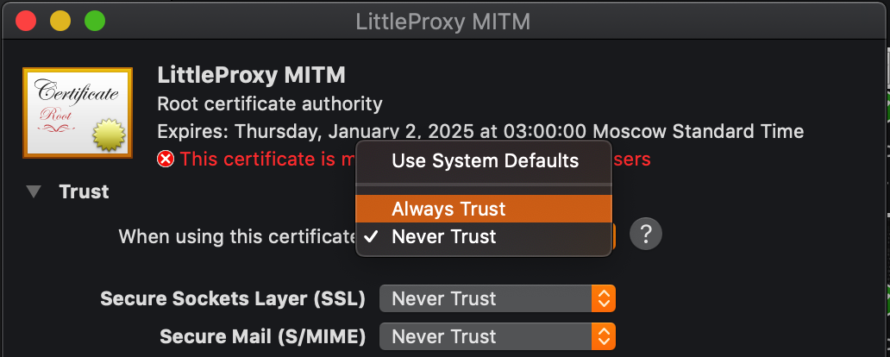
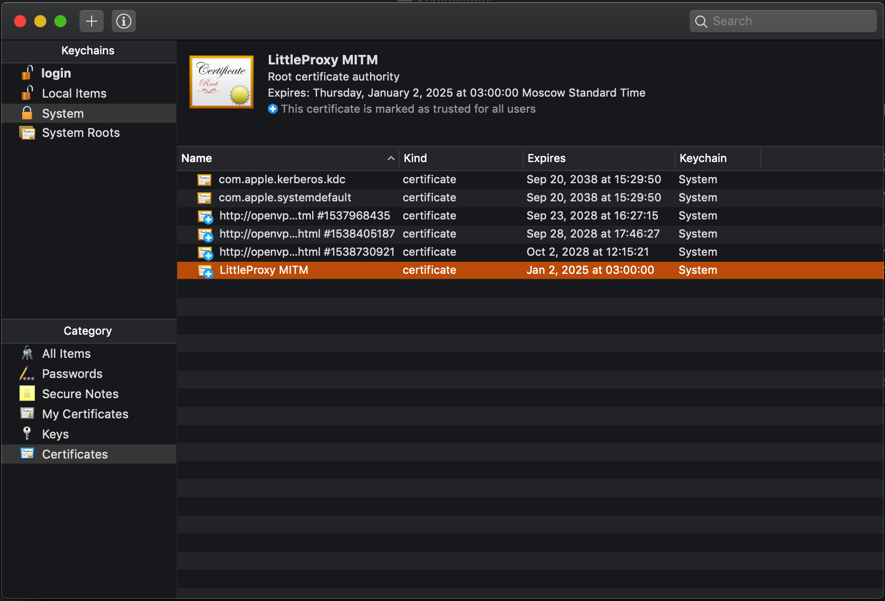

Proxy
Selenium provides the ability to set various proxy settings for the browser session. This possibility is implemented and supplemented in Carina Framework through the usage of various configurations.
First, the type of proxying is controlled by the configuration parameter
proxy_type. The value of this parameter can be DIRECT, MANUAL, DYNAMIC, PAC, AUTODETECT,
SYSTEM, UNSPECIFIED, UNUSED, LEGACY. Let's consider them in more detail.
DIRECT proxy mode
Specifies that the session will not use a proxy.
Set by changing the value of the proxy_type parameter in the configuration to DIRECT.
An example of using a proxy can be viewed here.
PAC proxy mode
A Proxy Auto-Configuration (PAC) file is a JavaScript function that determines whether web browser requests (HTTP, HTTPS, and FTP) go directly to the destination or are forwarded to a web proxy server. More information about the structure of the pac file can be found here.
Set by changing the value of the proxy_type parameter in the configuration to PAC.
This mode depends on the following configuration parameters:
proxy_autoconfig_url - specifies the URL to be used for proxy auto-configuration.
Expected format is http://hostname.com:1234/pacfile. However, the value of this parameter
may be local path with pac file.
proxy_pac_local - specifies, how the value provided in the proxy_autoconfig_url parameter.
If the parameter value is true then it is assumed
that proxy_autoconfig_url contains the path to the file on the local machine. It will be sent
browser to set up a proxy. If the value of the parameter is false, then it is assumed that
that proxy_autoconfig_url contains the URL to the pac file.
An example of using a proxy can be viewed here.
AUTODETECT proxy mode
Specifies whether to autodetect proxy settings. Presumably with WPAD.
Set by changing the value of the proxy_type parameter in the configuration to AUTODETECT.
An example of using a proxy can be viewed here.
SYSTEM proxy mode
Use system proxy settings. Default Mode on Linux.
Set by changing the value of the proxy_type parameter in the configuration to SYSTEM.
An example of using a proxy can be viewed here.
UNSPECIFIED proxy mode [NOT RECOMMENDED TO USE]
The mode set in the Selenium proxy by default and indicates that they should use the following settings (for Windows - DIRECT mode, for linux - SYSTEM).
Set by changing the value of the proxy_type parameter in the configuration to UNSPECIFIED.
It is not recommended to use, if you want to specify that the proxy object is not added to
session, then use UNUSED mode. Only added because Selenium provides
the ability to explicitly specify the UNSPECIFIED proxy type.
UNUSED proxy mode
Specifies that the proxy object should not be added to the capability to start the driver.
However, as practice shows, the proxy object will still be present in the session with the UNSPECIFIED type.
Set by changing the value of the proxy_type parameter in the configuration to UNUSED.
MANUAL proxy mode
Proxy mode, in which the host and port of the proxy are explicitly specified.
Set by changing the value of the proxy_type parameter in the configuration to MANUAL.
Depends on the following configuration parameters:
proxy_host - contains a proxy host, for example 127.0.0.1
proxy_port - contains a proxy port, for example 8080
proxy_protocols - contains a list of protocol types to which should be applied
the above options. May contain a set of the following values: http, https, ftp, socks.
Values are separated by a comma, such as http,https,ftp.
no_proxy - contains comma-separated addresses to which the proxy should not be applied.
If this mode applies to the entire application, you can use the following setting:
proxy_set_to_system - if true, then sets proxy values to system properties, i.e.
the proxy will be applied to all http/https/ftp requests from the application as well (depends on the values listed in proxy_protocols).
However, this approach is not thread-safe and is therefore not recommended for use in all other modes. Disabled by default.
An example of using a proxy can be viewed here.
DYNAMIC proxy mode
Advanced proxy mode.
Starts with rules. The rule defines which 'dynamic' proxy should be started when forming capabilities before starting the driver. The rule must implement the interface IProxyRule.
The default rule is DefaultProxyRule,
which depends on the value of the browserup_proxy parameter (if true, then the proxy should be started, if false, then not),
and uses the dynamic proxy implementation, which in turn uses BrowserUpProxy.
The rule can be either global or set for a separate test. Setting the rules globally/for the test is done using the methods of the class ProxyPool. Also all dynamic proxies are controlled by this class. This class manages the state of the proxy (starting, stopping, getting information about running proxy, controlling the use of the specified ports).
All dynamic proxies depend on the following configuration parameters:
proxy_port - priority parameter when obtaining the port for the proxy to be started.
The default value is 0 (dynamic port), but this value is relevant
for the default dynamic proxy implementation, may not be relevant for other implementations.
proxy_ports - defines the range of ports that can be used for running proxies.
Example: 4000:5000 - ports 4000 to 5000 will be used. Only used
if the value of proxy_ports is NULL.
There are also parameters on which the default dynamic proxy implementation depends:
browserup_disabled_mitm - when true, MITM capture will be disabled, false otherwise
The default dynamic proxy implementation is represented by the CarinaBrowserUpProxy class.
An example of using a default dynamic proxy can be viewed here.
If you want to use a proxy that is not use BrowserUp or use BrowserUp with custom configuration, then you can create your own implementation. For this you have to create a class, implementing the IProxy interface. In your implementation, you manage the state of the proxy yourself, however, you must follow the rules described by the interface, so that the proxy pool correctly manages your implementation. You also need to implement your rule. To do this, you need to create a class that implements the IProxyRule interface, and then register it using the ProxyPool class methods. This rule will be used instead of the default rule (can be set globally or per test).
LEGACY proxy mode [DEFAULT, WILL BE DEPRECATED IN FUTURE RELEASES]
Set by changing the value of the proxy_type parameter in the configuration to LEGACY.
There is a possibility to send all test traffic via proxy including the embedded light-weight BrowserUp proxy server. There are several properties available to manage all kinds of proxy usage:
proxy_host=NULL
proxy_port=NULL
proxy_protocols=http,https,ftp
proxy_set_to_system=true
browserup_proxy=false
browserup_disabled_mitm=false
browserup_port=0
With the enabled browserup_proxy, Carina will start the dedicated proxy instance on every test method.
Carina automatically detects an IP address for your local browserup proxy and puts it into the capabilities in case if proxy_host=NULL. If you want to map some publicly available IP address for your browserup proxy instance then you'll need to override it via proxy_host property. E.g. proxy_host=myhostname is useful in case of running maven process inside a docker container. Override the hostname, and it will be available from Selenium instance.
browserup_port=0 means that Carina dynamically identifies a free port for a proxy session.
browserup_ports_range=8001:8003 means that Carina will use only ports from given range for starting of browserup sessions. That's reasonable for cases when only several ports are shared at environment and can be accessed from other machines within the network. If all ports are used then test will wait for the first freed port.
browserup_disabled_mitm is disabled by default.
Important! If you have troubles with SSL traffic sniffing, the first thing you should do is to change browserup_disabled_mitm property value!
Declare proxy_host, proxy_port and proxy_protocols to send all Web and API test traffic via your static network proxy. Also, to enable proxy for TestNG Java process, proxy_set_to_system must be specified to true, otherwise only WebDrivers and API clients will be proxied.
Note: The above settings are mostly required to get public internet access through corporate proxies.
Using the default dynamic proxy implementation (CarinaBrowserUpProxy) in DYNAMIC mode in Java code
IMPORTANT: All of the following examples of using ProxyPool in the current section use the class ProxyPool.
1) Make sure the driver instance is already started:
getDriver();
Note: During the driver startup, Carina automatically starts proxy (depends on rule) and adjusts browser capabilities to track the desired protocols. To get proxy instance for the current test/thread, you can call:
Optional<IProxy> proxy = ProxyPool.getProxy();
You can get a specific implementation of a dynamic proxy as follows (but you need to be sure which implementation will be in the pool):
Optional<CarinaBrowserUpProxy> proxy = ProxyPool.getOriginal(CarinaBrowserUpProxy.class);
2) Enable the required Har capture type using:
CarinaBrowserUpProxy proxy = ProxyPool.getOriginal(CarinaBrowserUpProxy.class)
.orElseThrow();
BrowserUpProxy browserUpProxy = proxy.getProxy();
browserUpProxy.enableHarCaptureTypes(CaptureType.REQUEST_CONTENT, CaptureType.RESPONSE_CONTENT);
There are a lot of possible content types:
CaptureType.RESPONSE_COOKIES
CaptureType.RESPONSE_HEADERS
CaptureType.REQUEST_HEADERS
CaptureType.RESPONSE_CONTENT
CaptureType.REQUEST_CONTENT
...
They all can be set as comma-separated parameters.
3) You may want to save the captured content into a .har file:
proxy.newHar(HAR_NAME);
//Some testing activity...
//Saving har to a file...
File file = new File(HAR_NAME + ".har");
Assert.assertNotNull(proxy.getHar(), "Har is NULL!");
try {
proxy.getHar().writeTo(file);
} catch (IOException e) {
e.printStackTrace();
}
Your .har file will be created in the project root folder.
4) There are four methods to support request and response interception:
addRequestFilter
addResponseFilter
addFirstHttpFilterFactory
addLastHttpFilterFactory
To add and configure content filters, look here.
An example of using response filtering can be viewed here.
Dealing with MITM and installing SSL certificate into your system:
For Mac users:
- Go here and save it as ca-certificate-rsa.cer.
-
A double click creates a file. The next window should appear:

-
After authorization, the certificate will be added into your system certificates, but it's still untrusted:

-
To make it trusted, double click on it. The following window should appear:

-
First, click the drop-down menu and select Always Trust option. Then close the window (a second authorization will be required):

-
Make sure the red cross on your certificate turned into a blue one:

Adding SSL certificate into Java keystore:
If you are still receiving the following exception:
javax.net.ssl.SSLHandshakeException: sun.security.validator.ValidatorException: PKIX path building failed: sun.security.provider.certpath.SunCertPathBuilderException: unable to find valid certification path to requested target
you may need to set up ca-certificate-rsa.cer into your Java keystore.
For Mac and Linux users:
sudo keytool -importcert -alias browserup -file pathToYourCertificateLocation/BrowserUpCertificate.crt -keystore /Library/Java/JavaVirtualMachines/jdk1.8.0_181.jdk/Contents/Home/jre/lib/security/cacerts
You will be asked to enter your Mac profile password and a Java keystore password (by default: changeit).